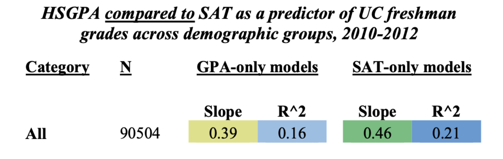

- Take the check-out.
- Feel free to read an excerpt from Tommy Orange’s THERE THERE.
The RCA “Indian Head Test Pattern”, as referenced in the text.
“In the dark times
Will there also be singing?
Yes, there will also be singing.
About the dark times?”
- Bertolt Brecht
There was an Indian head, the head of an Indian, the drawing of the head of a headdressed, long haired, Indian depicted, drawn by an unknown artist in 1939, broadcast until the late 1970s to American TVs everywhere after all the shows ran out. It’s called the Indian Head Test Pattern. If you left the TV on, you’d hear a tone at 440 hertz—the tone used to tune instruments—and you’d see that Indian, surrounded by circles that looked like sights through rifle scopes. There was what looked like a bullseye in the middle of the screen, with numbers like coordinates. The Indian head was just above the bullseye, like all you’d need to do was nod up in agreement to set the sights on the target. This was just a test.
In 1621, colonists invited Massasoit, chief of the Wampanoags, to a feast after a recent land deal. Massasoit came with ninety of his men. That meal is why we still eat a meal together in November. Celebrate it as a nation. But that one wasn’t a thanksgiving meal. It was a land deal meal. Two years later there was another, similar meal, meant to symbolize eternal friendship. Two hundred Indians dropped dead that night from supposed unknown poison.
By the time Massasoit’s son Metacomet became chief, there were no Indian-Pilgrim meals being eaten together. Metacomet, also known as King Phillip, was forced to sign a peace treaty to give up all Indian guns. Three of his men were hanged. His brother Wamsutta was, let’s say, very likely poisoned after being summoned and seized by the Plymouth court. All of which lead to the first official Indian war. The first war with Indians. King Phillip’s War. Three years later the war was over and Metacomet was on the run. He was caught by Benjamin Church, Captain of the very first American Ranger force and an Indian by the name of John Alderman. Metacomet was beheaded and dismembered. Quartered. They tied his four body sections to nearby trees for the birds to pluck. John Alderman was given Metacomet’s hand, which he kept in a jar of rum and for years took it around with him—charged people to see it. Metacomet’s head was sold to the Plymouth Colony for thirty shillings—the going rate for an Indian head at the time. The head was spiked and carried through the streets of Plymouth before it was put on display at Plymouth Colony Fort for the next twenty five years.
In 1637, anywhere from four to seven hundred Pequot were gathered for their annual green corn dance. Colonists surrounded the Pequot village, set it on fire, and shot any Pequot who tried to escape. The next day the Massachusetts Bay Colony had a feast in celebration, and the governor declared it a day of thanksgiving. Thanksgivings like these happened everywhere, whenever there were, what we have to call: successful massacres. At one such celebration in Manhattan, people were said to have celebrated by kicking the heads of Pequot people through the streets like soccer balls.
The first novel ever written by a Native person, and the first novel written in California, was written in 1854, by a Cherokee guy named John Rollin Ridge. His novel, The Life and Adventures of Joaquin Murieta, was based on a supposed real-life Mexican bandit from California by the same name, who, in 1853, was killed by a group of Texas rangers. To prove they’d killed Murrieta and collect the five thousand dollar reward put on his head—they cut it off. Kept it in a jar of whiskey. They also took the hand of his fellow bandit Three Fingered Jack. The rangers took Joaquin’s head and the hand on a tour throughout California, charged a dollar for the show.
The Indian head in the jar, the Indian head on a pike were like flags flown, to be seen, cast broadly. Just like the Indian head test pattern was broadcast to sleeping Americans as we set sail from our living rooms, over the ocean blue green glowing airwaves, to the shores, the screens of the new world.
Thinking More About \(R^2\)
In Real-Life

- DISCUSS : what do these linear models tell us about the relationship between GPA, SAT (IVs) and freshman grades (DV)?